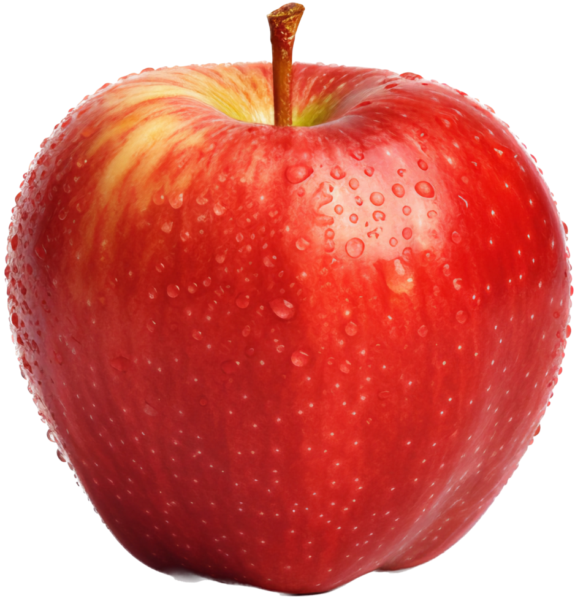

Maçã
você ja comeu uma hoje?

Sobre a maçã
A maçã é uma fruta saborosa e nutritiva, amplamente consumida em todo o mundo. Rica em fibras, vitaminas e antioxidantes, ela contribui para a saúde do coração, auxilia na digestão e fortalece o sistema imunológico. Além de ser prática e versátil, pode ser consumida in natura, em sucos, sobremesas ou saladas. Com sua variedade de cores e sabores — do doce ao levemente ácido —, a maçã é símbolo de vitalidade e um dos alimentos mais populares da alimentação saudável.
Curiosidade: A maçã é a fruta mais cultivada no mundo, com mais de 7.500 variedades diferentes.
I guess the apple could turn yellow or green - Charlie XCX
Você conhece os tipos de maçã?
- Maçã Fuji
- Maçã Gala
- Maçã Granny Smith
- Maçã Red Delicious
- Maçã Golden Delicious
- Maçã Pink Lady
- Maçã Braeburn
- Maçã McIntosh
- Maçã Cortland
- Maçã Rome Beauty
Que tal um bolo?

ingredientes:
- 2 maçãs descascadas e cortadas em cubos
- 2 xícaras de farinha de trigo
- 1 xícara de açúcar
- 1/2 xícara de óleo vegetal
- 3 ovos
- 1 colher de chá de fermento em pó
- 1 colher de chá de canela em pó
- 1 pitada de sal
modo de preparo:
- Pré-aqueça o forno a 180°C e unte uma forma de bolo.
- Em uma tigela grande, misture a farinha, o açúcar, o fermento, a canela e o sal.
- Em outra tigela, bata os ovos e adicione o óleo. Misture bem.
- Adicione os ingredientes líquidos aos secos e mexa até obter uma massa homogênea.
- Incorpore as maçãs cortadas à massa.
- Despeje a massa na forma preparada e leve ao forno por cerca de 40-45 minutos, ou até que um palito inserido no centro saia limpo.
- Deixe esfriar antes de desenformar e servir.
quer mais informações?
15 beneficios para a saúde
13 motivos para comer maçã todos os dias
tabela nutricional